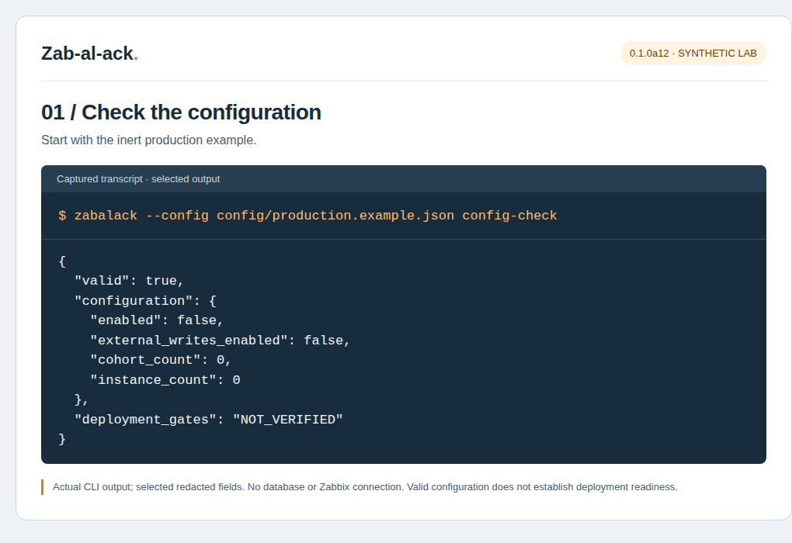
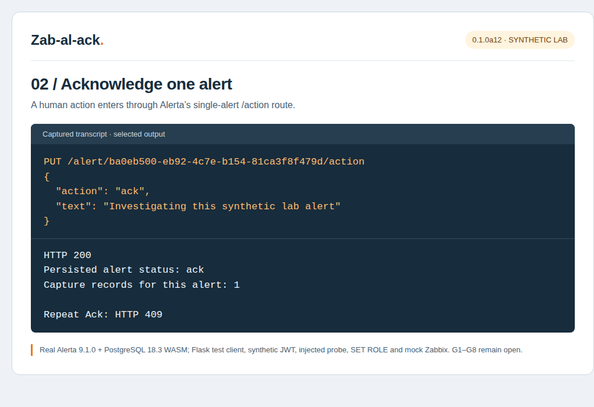
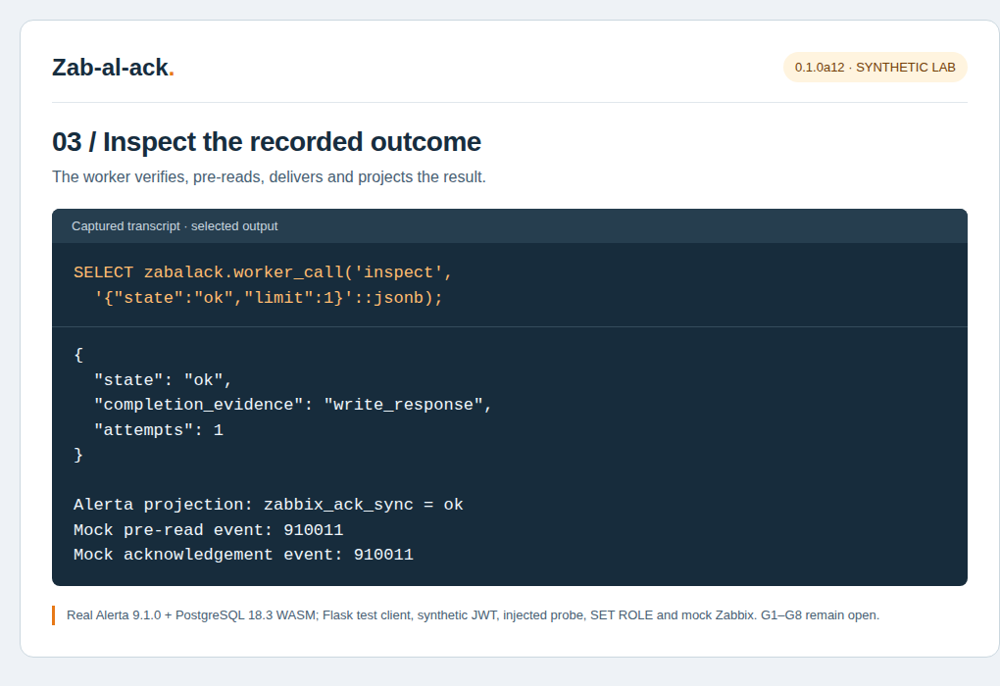
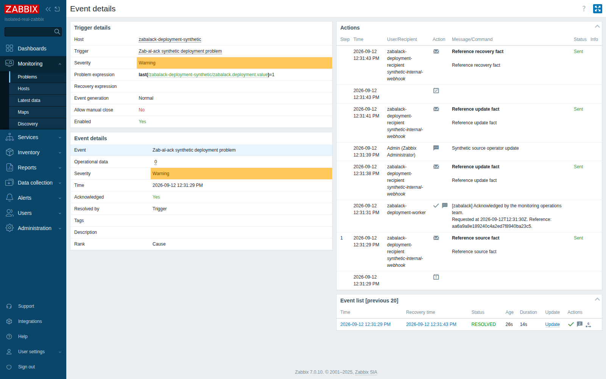

THE OPERATOR’S GUIDE
From first run
to a controlled pilot.
Install the reference package, understand the handoff, and inspect what happens after an acknowledgement.
0.1.0a16 Examples checked against the packaged candidate.
/reviewed/ are placeholders for your reviewed lab files.A9 / PROJECT NAME
Ackline is now Zab-al-ack
The name brings together Zabbix, Alerta and acknowledgements. Use zabalack for the Python package, import, CLI, database schema and service prefix.
a9 refuses a database containing an ackline schema. Keep the old release and ledger intact. This release supports a fresh installation namespace; it does not migrate an existing Ackline database in place.
| Interface | a9 identifier |
|---|---|
| CLI and Python import | zabalack |
| Alerta plugin entry points | zabalack_zabbix_normalise, zabalack_zabbix_ack |
| Alerta application factory | zabalack.plugins:create_app() |
| Alerta configuration key | ZABALACK_CONFIG_FILE |
| Database and service prefix | zabalack |
Under an approved operational change, fence old writers, account for in-flight requests and retain old verification and audit records. Qualify a fresh Alerta database and new configuration with external writes disabled. Never rewrite or re-sign historical captures, copy the old checksum ledger, or run both writers for one cohort. Same-database continuity needs a separately designed upgrade.
Old signatures do not validate under the new name, even if their visible prefix is changed. Both old and new proof strings are redacted. Source facts and zabbix_ack_sync* projections stay stable; exact historical neutral comments are recognised only to suppress echoes.
The complete source handoff includes docs/RENAME.md, old/new SQL hashes, the cumulative changelog, retained Ackline releases and the non-destructive rollback guide. All production gates remain open.
01 / FIRST RUN
Try the isolated reference lab
Use a disposable Linux development checkout with Python 3.12, Node.js 22 and npm. Run these commands from the root of the supplied source tree. Dependencies are downloaded; no configured production service is contacted.
Shell · source installation
python3.12 -m venv .venv
.venv/bin/python -m pip install -r requirements.lock
.venv/bin/python -m pip install --require-hashes --only-binary=:all: -r requirements-quality.lock
.venv/bin/python -m pip install --no-deps --no-build-isolation -e .
npm ci --prefix lab --legacy-peer-deps --ignore-scripts
TZ=UTC .venv/bin/python tools/quickstart.py --isolated-labThe demo checks inert configuration and synthetic webhook payloads, then runs actual Alerta HTTP and PostgreSQL persistence through the worker path. PostgreSQL runs in PGlite/WASM; Zabbix responses and writes are mocked. A successful run ends with “Demonstration complete.”
Installing the wheel instead
In a separate Python 3.12 environment with the matching reviewed dependencies already installed, use the supplied wheel. This installs the CLI and plugin entry points. It does not apply SQL migrations or activate write-back.
Shell · reviewed local artifact
.venv/bin/python -m pip install --no-deps \
/reviewed/zabalack-0.1.0a16-py3-none-any.whl
.venv/bin/python -m pip checkKeep the matching source release for migrations, media artifacts, collectors and tests; these are not installed by the wheel.
LAB / FOLLOW THE OUTPUT
See what the workflow records
Views 1–3 are supplied browser captures of transcript pages showing selected output from a12 synthetic lab data, with copyable commands alongside; they are not application UI. View 4 is a real Zabbix 7.0.10 frontend screenshot of the deployment lab’s acknowledged event. The source ZIP includes transcript pages, browser-capture hashes and a reproduction recipe. Each view identifies its real and mocked components.
1. Check the inert configuration


Shell · no network access
zabalack --config config/production.example.json config-checkObserved: valid true, enabled false, external writes false, cohort count 0, instance count 0. Deployment gates remain NOT_VERIFIED. A valid file does not establish readiness.
2. Acknowledge one synthetic alert


HTTP · authenticated human session in an isolated lab
PUT /alert/<full-lab-alert-uuid>/action
Content-Type: application/json
{"action":"ack","text":"Investigating this synthetic lab alert"}Observed: HTTP 200, persisted status ack and one capture record. Repeat Ack returns HTTP 409. Authentication headers and raw history are omitted. Local acceptance does not mean the source has acknowledged the event.
3. Inspect the delivery result


Shell · read-only inspection using your reviewed lab configuration
zabalack --config /reviewed/lab-worker.json inspect --state ok --limit 1Selected observed fields: state ok, completion_evidence write_response, attempts 1, and Alerta projection zabbix_ack_sync ok. The mock saw a pre-read and one acknowledgement for event 910011. This demonstrates the reference workflow; it does not validate a real Zabbix, native SQL login permissions, PgBouncer, TLS, service installation or G1–G8.
4. See the acknowledgement in the Zabbix frontend


tools/run_deployment_e2e_local.py; headless Chromium, default Admin session, lab data only. Open full size.Reading the Actions column bottom-up: the source action’s webhook delivered the reference source fact to the lab’s Alerta; the worker acknowledged the event with the neutral [zabalack] comment; the update fact for that comment was delivered and filtered as an echo on the Alerta side; a human update from Admin was delivered and recorded; the recovery fact closed the loop. The original a12 deployment record accompanies this supplied screenshot; the independent review’s later runs are recorded separately. It does not close G1–G8 or describe a production instance. There is no Alerta UI screenshot: the Alerta Web UI is a separate project the lab does not install.
Reproduce the output views
From the supplied source checkout with its pinned dependencies, run:
Shell · isolated synthetic lab only
TZ=UTC .venv/bin/python tools/capture_docs.py --isolated-labThe script accepts no target or credential arguments. It creates a fresh PostgreSQL WASM database and runs tests/alerta/test_docs_walkthrough.py with Flask’s test client, a synthetic user JWT, injected probe, SET ROLE and a mock source. Selected output, HTML transcripts and SVG illustrations go to build/docs. See docs/visual-guide.md for hashes, privacy boundaries and the browser-capture procedure used for a12.
02 / CONFIGURATION
Validate before connecting anything
This minimal configuration uses the package’s defaults for omitted fields. Save it as zabalack-disabled.json in the source root. It contains no credentials, endpoints or active cohort.
JSON · inert configuration
{
"enabled": false,
"external_writes_enabled": false,
"capture_bypass": false,
"config_revision": "UNCONFIGURED",
"cohorts": [],
"endpoint_registry": {},
"ingestion_mappings": {},
"signing_keys": {},
"admin_exceptions": []
}Shell · offline check
.venv/bin/zabalack --config zabalack-disabled.json config-checkExpect "valid": true, zero cohort and instance counts, and "deployment_gates": "NOT_VERIFIED". This checks configuration shape only: it does not open a database, resolve secret files, test permissions or establish capture health.
How an approved cohort is described
A cohort binds one customer, logical Zabbix instance and trigger to explicit host and group IDs. This disabled, synthetic example demonstrates the shape of one entry; it is not part of the empty configuration above.
JSON · one disabled cohort
{
"customer": "synthetic-customer",
"zabbix_instance": "lab-zabbix",
"zabbix_trigger_id": "10001",
"host_ids": ["20001"],
"group_ids": ["30001"],
"revision": "lab-1",
"policy_revision": "1",
"enabled": false,
"one_to_one": true,
"comment_enabled": true,
"allow_admin": false
}IDs are strings. Approve the complete host set; do not substitute hostnames or infer membership from arriving alerts. An endpoint is selected from the reviewed registry, never from an incoming callback URL.
Keep identities separate
| Setting | Purpose |
|---|---|
probe_dsn_file | Dedicated database identity for the bounded capture-health check. |
worker_dsn_file | Worker, inspection and reconciliation database identity. |
operator_dsn_file | Separate identity for audited controls such as pause and repair. |
signing_keys | Key IDs mapped to protected absolute file paths. |
endpoint_registry | Logical instances mapped to reviewed HTTPS API URLs, token files, CA files and explicitly approved API versions. |
Secret files must be regular files with owner/root ownership and no group or world access; symlinks are rejected. The process must be able to read them. Keep secrets out of command arguments and public reports.
03 / APPLICATION ADAPTER
Connect to the existing Alerta app
The alpha’s activation gate supports Alerta server 9.1.0 with the default ALERTA alarm model. Other versions or models remain local-only until their compatibility coverage is extended.
- Install the matching wheel into each reviewed Alerta environment after verifying its dependencies.
- Set
ZABALACK_CONFIG_FILEin the existing Alerta configuration to the reviewed JSON path. - Add
zabalack_zabbix_normalisebefore plugins that export inbound attributes. Keepzabalack_zabbix_acklast in every effective routed status chain. Preserve the other plugins and authentication settings. - Use the supplied application adapter after logging setup and before serving requests.
Python · existing alertad.conf
ZABALACK_CONFIG_FILE = "/reviewed/zabalack.json"For an ordinary Gunicorn factory deployment, the application target is zabalack.plugins:create_app(). If your deployment already has a custom factory, keep it and wrap the finished app:
Python · inside your existing factory, after app creation and logging
from zabalack.plugins import configure_app
configure_app(app) # existing Alerta application, before it serves requestsThe adapter protects proof material in precommit logging and error responses. Omitting it causes eligible acknowledgements to fail closed. The wheel alone is insufficient: the matching SQL installation and healthy probe are also required.
04 / OPERATOR WORKFLOW
Acknowledge one eligible alert
In a configured synthetic pilot, sign in to Alerta as an authorised human, open a single eligible problem and use its acknowledgement action. An ingestion API key or an API-key owner label does not establish human authority.
HTTP · illustrative request from an authenticated human session
PUT /alert/00000000-0000-4000-8000-000000000001/action
Content-Type: application/json
{"action": "ack", "text": "Investigating disk capacity in the synthetic lab."}The UUID above is synthetic. Use the actual full alert UUID. Zab-al-ack saves the signed request with the Alerta acknowledgement; the worker verifies it, reads the frozen original Zabbix problem and checks scope before sending. A local acknowledgement is not confirmation of source delivery.
Inspect zabbix_ack_sync and zabbix_ack_sync_reason in alert attributes. The ledger is authoritative; these fields are a view of its outcome.
| Value | What it means |
|---|---|
pending | Saved locally; delivery or a hold is still outstanding. |
ok | A successful write response or source acknowledgement was observed. Read the reason before attributing it to this action. |
failed | Inspect validation, policy, credentials or API failure before any retry. |
skipped | Local-only outcome, such as an excluded route, actor or mapping. |
expired | The original four-hour execution window has ended. |
| Missing | No integration result is established. Do not read absence as success. |
Repeated Ack-on-Ack retains Alerta’s HTTP 409. Bulk, abbreviated-ID and direct status-update routes do not create write-back intents. An already acknowledged Zabbix event receives no extra acknowledgement or comment.
05 / DAILY OPERATIONS
Inspect, reconcile, then intervene
These examples require a separately prepared lab database and reviewed configuration. The inert config from the quickstart intentionally cannot run database commands.
Shell · inspection through the worker database identity
.venv/bin/zabalack --config /reviewed/worker.json status
.venv/bin/zabalack --config /reviewed/worker.json doctor
.venv/bin/zabalack --config /reviewed/worker.json verifier-health
.venv/bin/zabalack --config /reviewed/worker.json inspect --state held --limit 50
.venv/bin/zabalack --config /reviewed/worker.json inspect --state unknown --limit 50
.venv/bin/zabalack --config /reviewed/worker.json inspect --state failed --limit 50
.venv/bin/zabalack --config /reviewed/worker.json metricsmetrics emits Prometheus text to stdout for an existing collector; it does not start an HTTP exporter. Example gauges include zabalack_pending_count, zabalack_oldest_pending_seconds and zabalack_capture_healthy.
Shell · one reconciliation cycle
.venv/bin/zabalack --config /reviewed/worker.json reconcile --read-only --once--nightly for the bounded mapped-event drift sweep.Pause a selected instance
This is an audited database change, for an authorised operator in a configured lab. The logical instance must already exist in the reviewed endpoint registry.
Shell · operator control, no Zabbix acknowledgement
.venv/bin/zabalack --config /reviewed/operator.json pause \
--instance lab-zabbix \
--owner LAB_OPERATOR \
--change-ref LAB_CHANGE_REFERENCE \
--reason 'Synthetic maintenance exercise'Pausing does not cancel an HTTP request already sent. Account for in-flight attempts and retain their evidence. After fixing the cause, use retry only with the recorded action UUID and the required owner/change references. A retry cannot refresh the action’s expiry or automatically settle an unknown outcome.
06 / TROUBLESHOOTING
Follow the recorded reason
| Observation | Next step |
|---|---|
| Eligible Ack is rejected | Check adapter installation, probe routing, schema version, trigger readiness and config revision. Do not disable capture to hide the symptom. |
| Timeout after sending | Inspect unknown work and reconcile. A missing reference does not prove the earlier request stopped; avoid blind retries. |
| Host IDs or complete host set changed | Keep the original approval intact. Review the mapping and approve a new cohort revision; do not substitute by hostname. |
| Token, permission or CA error | Hold the affected instance, repair protected references or permissions, and explicitly review circuit recovery. |
| Ledger completed but Alerta view lags | Repair the projection from the ledger. Do not repeat the source write to repair a UI field. |
| Zabbix later becomes unacknowledged | Record drift. Zab-al-ack does not automatically undo a deliberate source unacknowledgement. |
Escalate unresolved remote outcomes using the source runbook’s settle-unknown evidence procedure. The operator must independently establish fencing, completed remote processing and no effect; that control records an assertion rather than proving remote cessation.
07 / REPRODUCIBILITY
Run the right evidence layer
Shell · disposable source checkout
TZ=UTC .venv/bin/python tools/run_reference_suite.py --wasm
TZ=UTC .venv/bin/python tools/run_sql_checks.py --isolated-lab
node zabbix/v1/test_webhook.cjsThe reference runner writes fresh results beneath evidence/ and raw local logs beneath build/evidence-raw/. Keep raw logs private. The runner removes inherited service-fixture settings; native-only and real-Zabbix cases are reported separately as skipped.
Shell · dedicated Docker Compose lab host, or locally installed PostgreSQL 18 and PgBouncer
TZ=UTC .venv/bin/python tools/native_ci.py --isolated-lab
ACK_LAB_PG_BIN=/path/pg18/bin ACK_LAB_PGBOUNCER_BIN=/path/pgbouncer TZ=UTC .venv/bin/python tools/native_local.py --isolated-labBoth native runners manage disposable PostgreSQL/PgBouncer fixtures with the same phases and environment; docs/local-services.md lists the inputs of the non-Docker form. Neither is a production test command. Real-Zabbix tests require separately provisioned synthetic events, restricted and witness tokens, and explicit lab-write opt-in; follow lab/real_zabbix.md in the matching source.
The original a8 artifacts rebuilt byte-for-byte and passed 725 reference tests, with 22 skips and no failures. The independent review found an evidence-validation defect; 56 regression cases now check contradictory deployment reports before export, archive verification and final service recording. a9 retains that validator and adds the namespace changes described above; a10 through a16 change no runtime behaviour. Older artifacts and service reports remain in the historical handoff; their hashes do not describe a16.
Service evidence, executed for a16. On this tree the local runners recorded 42 native PostgreSQL 18.3/PgBouncer 1.24.1 cases in five fresh clusters, six real Zabbix 7.0.10 contract cases — the five original ones plus the case that requires the server’s specific suppression-permission denial for the lab token — and the installed-wheel pipeline’s four tests with 13 observations. These runs belong to a16; unchanged service-path code is grounds for an inference about a14 and a15, not a substitute for their own records. The independent review separately recorded Zabbix 7.0.30 and 7.0.10 contract runs and ten supplemental real API cases in its own QEMU lab; those remain its evidence. Its supplemental cases cover the original/recovery distinction, complete multi-host validation, action 2 without a comment, specific excluded-action denials, a witnessed scope denial, expired credentials and a lost response after a real accepted write. Neither lab establishes production capacity. Docker Compose and G1–G8 remain open.
Runners bind results to source and harness digests. The corrected gate also checks counts, observations, cleanup and runtime identity; it does not authenticate an unsigned report's author. Do not edit reports to make changed code appear tested. Read the review follow-up, eight upgrades and alpha brief for scope and limitations.
08 / CONTROLLED ROLLOUT
Separate installation from activation
Plan an inert installation first. The source includes opt-in Ansible playbooks, systemd units, versioned SQL and role/grant scripts. The default inventory selects no hosts and installation does not restart existing services or start workers.
- Verify matching artifacts and collect environment, permission and routing evidence.
- Provision reviewed roles. Run migrations as
zabalack_owner; attach and seal capture through the separately authorisedalertsowner/installer. - Validate schema version 3, exact caller grants, capture health and application/probe writer alignment.
- Stage plugins and configuration with external writes disabled. Validate every serving route before enrolling a pilot.
- Close the environment-specific gates before any approved enablement. Never activate by copying a synthetic fixture.
Detailed commands and sequencing live in docs/deployment.md and sql/install/ in the supplied source. Migration ownership does not grant table-owner authority; successful superuser tests do not establish runtime permissions.
Upgrading from a4 or a5
The fresh a9 zabalack baseline includes all seven migrations and requires schema 3. Migration 007 retains the settled-expiry correction: a settled no-effect action can close at its original expiry under the existing uncertainty and lease guards. Historical Ackline SQL is retained separately. Do not use these files as an in-place Ackline upgrade.
Review and import the a9 media artifact
Verify effective source permissions
Amendment A4 corrects the lab role provisioner. In both inspected Zabbix versions, setting a default to zero does not revoke individual rules omitted from the request. The helper now enumerates action/UI permissions and verifies the effective role.get result before issuing users or tokens. In an isolated lab, use the corrected helper and run the positive and negative cases; a role-create request alone is not permission evidence.
The real API tests require the specific action-role denials for close, severity change and suppression. The independent read-only witness establishes that the outside-scope event exists. Zabbix shares the acknowledge/unacknowledge capability: the token can inherently unacknowledge, while Zab-al-ack’s client rejects action 16 and allows only 2 or 6. G5 still requires these checks on your approved installed account. See the review findings.
Amendment A3 corrects handling of {EVENT.CAUSE.ID} when Zabbix 7.0.10 renders *UNKNOWN* for a problem without a cause. An engineer evaluating an earlier media artifact must review and re-import the corrected artifact into the isolated lab. This does not resolve the separate transport boundary below.
Resolve the reference transport boundary
The current webhook artifact leaves peer and hostname verification disabled in the inspected Zabbix 7.0.10 and 7.0.30 runtime, and redirects are followed. An HTTPS ingestion URL alone therefore does not authenticate this path or contain redirects. Amendment A2 keeps G1/G2 open until an approved transport remedy is inspected and tested against untrusted certificates, wrong hostnames and redirects outside the approved destination. The Zab-al-ack worker’s separate HTTPX client verifies TLS and does not follow redirects.
Alerta 9.1.0 also runs schema changes during ordinary application startup. The reference application uses the Alerta table owner as a trusted installation identity, separate from Zab-al-ack’s owner and restricted runtime identities. A non-owner application startup requires its own upstream resolution and validation; passing an owner-backed fixture does not establish it.
Generate a non-destructive rollback plan
Shell · plan only, no database or service changes
.venv/bin/python deploy/rollback.py \
--config /reviewed/operator.json \
--instance lab-zabbix \
--owner LAB_OPERATOR \
--change-ref LAB_CHANGE_REFERENCEWithout --apply, this prints a plan with "mode": "plan_only" and "deletes_evidence": false. Normal rollback pauses delivery, accounts for in-flight work and retains the ledger. Retain migrations through 007 and schema version 3; a binary downgrade alone is not a database rollback. Follow the compatibility checks in the matching rollback runbook.
09 / ENGINEER HANDOFF
Collect only the inputs you need
The source collectors select explicit files or endpoints and create bounded, redacted output. This example sanitises a locally saved synthetic payload; it makes no service request. Use a new output filename because existing outputs are refused.
Shell · local payload redaction
.venv/bin/python collectors/collect.py \
--output /reviewed/problem-redacted.json \
payload --input /reviewed/synthetic-problem.jsonFor installed-environment evidence, local parses literal Alerta configuration without importing it, postgres reads catalog information in a read-only transaction, and zabbix uses explicitly selected read APIs. Use a separate inventory identity; do not broaden the delivery token for collection.
Review output before sharing. Static configuration and empty API results cannot prove effective routing or permissions. The consolidated register is docs/INPUTS_REQUIRED.md: installed versions and topology, real redacted payloads and update operations, customer/instance/trigger approvals, protected secret references, and named operational owners and records policy. G1–G8 remain deployment-specific.
This guide follows the supplied 0.1.0a16 CLI, configuration validator, plugin adapter, lab tools and runbooks, with amendments R10–R17, A4 and the adopted a8 evidence-validation correction. Use the reviewed edition’s artifact hashes and read the rename guide before any transition. Examples describe this candidate, not a general compatibility promise.
10 / ENGINEERING UPGRADES
Eight ways to make changes reviewable
a6 and a7 add checks around the trust boundaries, failure paths and release process. Each control has a bounded purpose. The cumulative changelog and amendments R10/R11 in the source explain the decisions; the retained a7 history includes the consolidated UPGRADES_1-8.md.
| Upgrade | What it improves | Evidence and current limits |
|---|---|---|
| 1 · Evidence tied to execution | Runners execute the tests they record. Source and harness digests, plus one CI run and attempt, prevent stale or foreign evidence from entering a build. | The independent a8 review added 56 deployment-evidence regressions. Hosted CI remains NOT_RUN. |
| 2 · Lint and typed boundaries | Hash-pinned Ruff checks production Python. Gradual strict mypy covers configuration, signing, policy and RPC boundaries. | Both gates passed. The entire application is not strictly typed. |
| 3 · Generated state and input tests | Hypothesis explores malformed trust inputs and ledger action sequences. It exposed the settled-expiry defect fixed by migration 007. | Property and restricted SQL state-machine cases passed in the reference suite. SQL execution here uses PostgreSQL WASM. |
| 4 · Process failure tests | Native scenarios exercise competing workers, dropped responses, a killed worker after remote commit and stale completion fencing. | Five native scenarios passed on the a12 tree (source-built PostgreSQL 18.3, real lease expiries and backoffs). |
| 5 · Mutation checks | Tests must reject reviewed unsafe code changes. Syntax failures, exceptions, missing cases and timeouts cannot masquerade as successful detection. | 20/20 nightly mutants detected; 111-case unchanged baseline passed. Coverage is curated Python unit/mock scope. |
| 6 · Deployment service lab | Installed app and worker processes use ordinary login, separate SQL logins, real Zabbix media import and problem/update/recovery flows. The supplied Docker form is separate from the local VM form executed here. | Independent final-harness local VM execution: 4 passed, 13/13 observations, cleanup exit 0. The supplied 7.0.10 lab screenshot above is an earlier capture. The Docker Compose form remains NOT_RUN. |
| 7 · Optional security analysis | Commit-pinned CodeQL for Python and JavaScript/TypeScript uses narrow permissions and explicit repository opt-in. | Workflow checks passed offline. Hosted analysis NOT_RUN; no clean scan is claimed. |
| 8 · Release verification | Validate archive bytes, wheel metadata, entry points and evidence. Separate tooling checks a future signed attestation against an exact workflow, tag and commit. | Unsigned release consistency passed. Hosted signing and cryptographic Zab-al-ack attestation verification NOT_RUN. |
Run the local quality and mutation checks
After the source and hash-pinned quality dependency installation in the quickstart, run these from the source root. The nightly mutation profile deliberately changes only disposable copies; the original source must remain unchanged.
Shell · development checkout
.venv/bin/python -m pip check
.venv/bin/python -m ruff check src
.venv/bin/python -m mypy --config-file mypy.ini
TZ=UTC .venv/bin/python tools/run_mutation_checks.py --profile pr
# Expanded catalogue; run separately when needed.
TZ=UTC .venv/bin/python tools/run_mutation_checks.py --profile nightlyThe PR profile contains 12 reviewed mutations; nightly contains 20. A survivor fails the gate. The first expanded run exposed missing wrong-event and wrong-trigger regression cases; a7 includes both. A 20/20 result does not measure mutation coverage of the entire codebase.
Verify the supplied release
In the complete ZIP, work from plugin/source/ after installing its reviewed dependencies. The sibling plugin/dist/ contains the built artifacts and their original checksums.
Shell · local artifact verification
.venv/bin/python tools/verify_release.py --dist ../distExpected scope: unsigned_release_consistency, with signed_attestation: false. Matching hashes establish consistency with the supplied source, not publisher identity. docs/release-provenance.md explains the separate attestation verifier and the independently trusted release-owner inputs it requires. The signing and publication templates remain inactive.
Inspect the service-lab plan
Shell · plan only
TZ=UTC .venv/bin/python tools/run_deployment_e2e.py --isolated-lab --plan
TZ=UTC .venv/bin/python tools/run_deployment_e2e_local.py --isolated-lab --runner-python /path/runner/bin/python --wheel dist/pypi/zabalack-0.1.0a16-py3-none-any.whl --services-file services.json --planActual execution requires a dedicated development host with a local Unix-socket Docker daemon and Compose, or the operator-provided local services described in docs/local-services.md. Read docs/deployment-e2e.md before running without --plan. The lab creates its own synthetic services and has no published ports; it does not validate production permissions, notifications, TLS remediation or G1–G8.